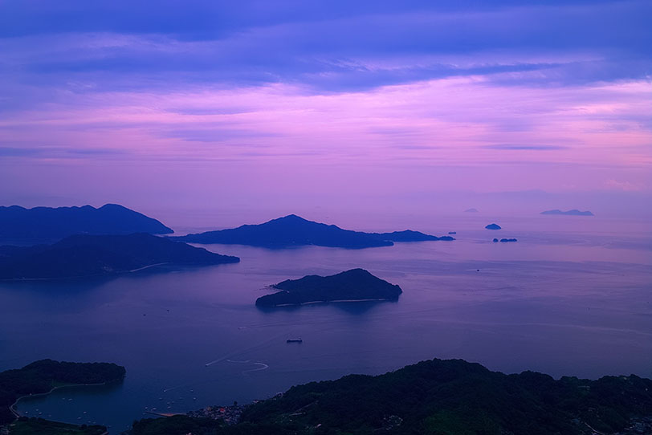
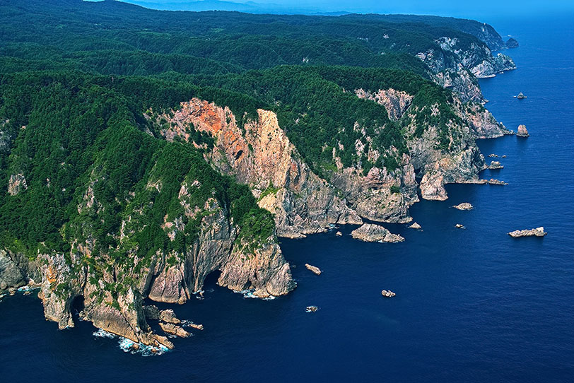

夏も終わり、綺麗な砂浜を見つめています。
一人静かにそぞろ歩き。幼い頃に口ずさんだ歌が蘇ります。
先日、開催したイベントの様子をご覧ください。
「心落ち着く海辺でのひとときをあなたに」を合言葉に、素敵な旅のお手伝いをしている会社です。
| 会社名 | 株式会社 BEACH |
|---|---|
| 創業 | 令和元年十一月十一日 |
| 会社方針 | お客様に喜んでいただけるよう、誠心誠意、取り組んでおります。 |
地下鉄野並駅より徒歩五分。交通至便の地にあります。
お気軽にお立ち寄りください。
ご意見、ご感想など、以下にご記入の上、送信してください。当社へのご質問などもお気軽にどうぞ。